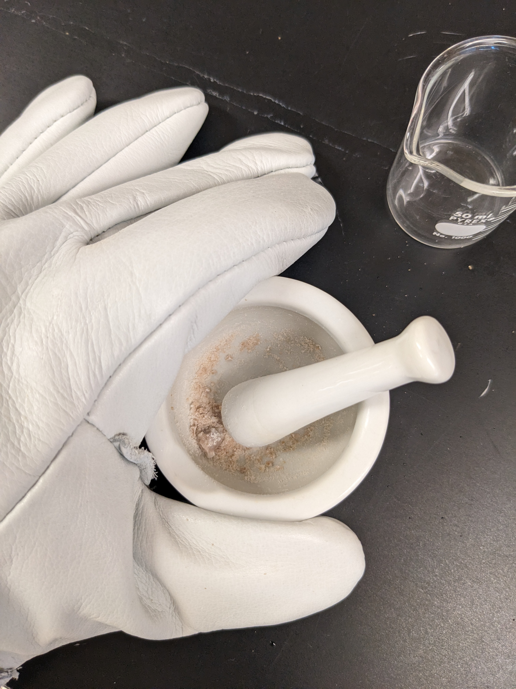
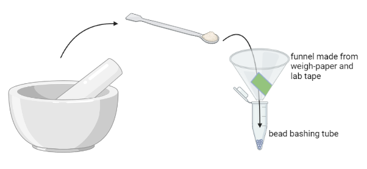

August 30th, 2023 (ex10)
Samples
- blank-30aug23
- mock-30aug23
- 1-HA2a
- 1-HH2a
- 3-HA2a
- 3-HH2a
- 3-MA2b
- 4-LA2a
- 4-MA2a
Results
Notes
August 24th, 2023 (ex9)
Samples
- 10-Aa
- 6-Aa
Results
Nanodrop
| sample_id | nanodrop_dna | 260/280 | 260/230 |
|---|---|---|---|
| 10-Aa | 177.55 | 1.87 | 1.02 |
| 6-Aa | 140.97 | 1.89 | 1.84 |
| sample_id | nanodrop_rna | 260/280 | 260/230 |
|---|---|---|---|
| 10-Aa | 41.71 | 2.11 | 2.19 |
| 6-Aa | 56.00 | 2.20 | 2.05 |
Qubit
| sample_id | qubit_dna_1 | qubit_dna_2 | qubit_dna_avg |
|---|---|---|---|
| 10-Aa | 169 | 165 | 167 |
| 6-Aa | 131 | 129 | 130 |
| sample_id | qubit_rna_1 | qubit_rna_2 | qubit_rna_avg |
|---|---|---|---|
| 10-Aa | 34.2 | 34.2 | 34.2 |
| 6-Aa | 42.6 | 43.2 | 42.9 |
Notes
Testing modified protocol with a goal of improving RNA purity on some samples that were taken after the acclimation period in the blue flow-through tanks. These samples are ‘snapshots’ of the corals after they were collected from Kaneohe Bay and fragmented to ~3cm nubbins
Modifications incorporated:
Added 500uL DNA/RNA Shield to bead bashing tube before adding powdered sample
After adding the powdered sample, I added another 1000uL of DNA/RNA Shield and vortexed with a quick pulse to submerge all of the powdered sample
1Transferred 600uL of supernatent from bead bashing tube to nuclease-free tube after Mortexing, and saved the bead-bashing tube with remaining ~400uL of homogenized tissue in DNA/RNA Shield as backup
Transferred 350uL of PK Digested sample to a new tube, saved the leftover PK Digested tube sample as backup
Added a dry spin for 2min after the last wash buffer spin to ensure complete removal of wash buffer
eluted 270uL of DNA & 60uL RNA in Hyclone nuclease-free water (expired Oct 2021..?)
1 Before this extraction, I had been conducted PK Digestion in the bead bashing tube. I got some advice that this could be contaminating the purity of the RNA:
Jerry Yu from Zymo says:
“We are worried about the sample debris remaining in the tube, which should still contain protein. One of the reasons for Proteinase K treatment at this step is to break down protein in the solution to make it less viscous/sticky, so the column can process it without issue. By transferring the mixture out, the treatment could be more efficient.”
2 Kind of arbitrary.. trying to hit something between 100 and 50 microliters
June 2nd, 2023 (ex8)
Samples (DNA only)
- blank-02jun23
- standard-02jun23
Results
| sample_id | qubit_dna_1 | qubit_dna_2 | qubit_dna_avg |
|---|---|---|---|
| blank-02jun23 | too low | too low | too low |
| standard-02jun23 | 21.8 | 22.2 | 22 |
Notes
- Started extraction at the Lyse bead bash step, because both blank and standard are liquids I didn’t need to do the mortar & pestle dance on LN2
- Added 75uL of blank & standard to their own correspondingly labelled bead bashing tubes
- Used 500uL DNA/RNA Shield
- PK Digestion in bead-bashing tubes
- No ‘dry spin’ to remove wash buffer
- DNA only, these samples are for microbiome contamination assesments
- eluted DNA in 50uL nuclease-free water
May 19th, 2023 (ex7)
Samples
- 3-Eb
- 2-CH1b
- 2-PA1b
- 3-CA1b
- 3-PH1b
- 4-PH1b
Results
| sample_id | qubit_dna_1 | qubit_dna_2 | qubit_dna_avg |
|---|---|---|---|
| 3-Eb | 600 | 586 | 593 |
| 2-CH1b | 9.46 | 9.16 | 9.31 |
| 2-PA1b | 358 | 350 | 354 |
| 3-CA1b | 330 | 318 | 324 |
| 3-PH1b | 48.8 | 47.2 | 48 |
| 4-PH1b | 41.4 | 40.8 | 41.1 |
| sample_id | qubit_rna_1 | qubit_rna_2 | qubit_rna_avg |
|---|---|---|---|
| 3-Eb | 38.6 | 38.4 | 38.5 |
| 2-CH1b | 33 | 33 | 33 |
| 2-PA1b | 74.6 | 74.6 | 74.6 |
| 3-CA1b | 170 | 170 | 170 |
| 3-PH1b | 69.4 | 69.8 | 69.6 |
| 4-PH1b | 81.2 | 81.2 | 81.2 |
Notes
Added 500uL of DNA/RNA Shield to each bead-bashing tube
3-CA1b got 79uL of DNase 1 Rx Mix… not quite enough (supposed to be 80uL)
May 15th, 2023 (ex6)
Samples
- 2-Ea
- 4-Ea
- 2-CA2a
- 4-CH1a
Results
| sample_id | qubit_dna_1 | qubit_dna_2 | qubit_dna_avg |
|---|---|---|---|
| 2-Ea | 248 | 238 | 243 |
| 4-Ea | 222 | 198 | 210 |
| 2-CA2a | 398 | 390 | 394 |
| 4-CH1a | 318 | 310 | 314 |
| cryo_id | qubit_rna_1 | qubit_rna_2 | qubit_rna_avg |
|---|---|---|---|
| 2-Ea | too low | too low | too low |
| 4-Ea | 660 | 650 | 655 |
| 2-CA2a | 218 | 216 | 217 |
| 4-CH1a | too low | too low | too low |
This Qubit RNA run had a suspiciously low standard #2, so I re-ran it on May 17th
| cryo_id | qubit_rna_1 | qubit_rna_2 | qubit_rna_avg |
|---|---|---|---|
| 2-Ea | 448 | 446 | 447 |
| 4-Ea | 238 | 240 | 239 |
| 2-CA2a | 318 | 320 | 319 |
| 4-CH1a | 83.2 | 83 | 83.1 |
Extraction Notes
Buffers prepped on 5/12/2023
PK Digestion carried out at 55C for 30min in bead bashing tube
Used frozen DNase Rx Mix from 5/12/2023 on 2-Ea
Not enough DNase 1 left, so for samples 2-CA2a, 4-CH1a & 4-Ea ratio of DNase to buffer was 10uL DNase:300uL Buffer… when it should be 20:300
eluted DNA and RNA in 50uL of Zymo DNA/RNA free water
For QA/QC the first dye+buffer working solution for RNA BR Assay showed a calibration error when running Standard 2, so I remade the dye+buffer working solution. However, the Standard 2 (4673) seemed lower than normal to me, so I re-ran the RNA Qubit for these samples on 5/17/2023 and used those values instead of the ones from 5/15/2023
May 12th, 2023 (ex5)
Samples
1-PA2a
1-PH1a
3-CH2a
4-CA1a
4-PA2a
4-PH1a
Results
| sample_id | qubit_dna_1 | qubit_dna_2 | qubit_dna_avg |
|---|---|---|---|
| 1-PA2a | 354 | 346 | 350 |
| 1-PH1a | 438 | 434 | 436 |
| 3-CH2a | 280 | 276 | 278 |
| 4-CA1a | 290 | 284 | 287 |
| 4-PA2a | 584 | 580 | 582 |
| 4-PH1a | 17 | 16.2 | 16.6 |
| sample_id | qubit_rna_1 | qubit_rna_2 | qubit_rna_avg |
|---|---|---|---|
| 1-PA2a | 768 | 756 | 762 |
| 1-PH1a | 808 | 816 | 812 |
| 3-CH2a | too high | too high | too high |
| 4-CA1a | too high | too high | too high |
| 4-PA2a | 738 | 726 | 732 |
| 4-PH1a | 45.4 | 43.2 | 44.3 |
Notes
1-PA2a & 4-CA1a had small amounts of starting material, about half of a 2mL cryovial
4-PH1a had an excess of starting material, full to the top of the bead bashing tube with powdered sample
PK Digestion on heat block set at 55C for 30min, after talk with Zymo rep on the phone
Not enough DNase treatment, so I made a second batch… the kit has very little DNase and it sticks to the lid of the vial, making it really hard to get it all, and there is no ‘extra’ provided. Have to be very careful with the DNase
May 5th, 2023 (ex4)
Samples
- 1-Ea
- 2-PA1a
Results
| sample_id | qubit_dna_1 | qubit_dna_2 | qubit_dna_avg |
|---|---|---|---|
| 1-Ea | 202 | 198 | 200 |
| 2-PA1a | 6.5 | 6.3 | 6.4 |
| sample_id | qubit_rna_1 | qubit_rna_2 | qubit_rna_avg |
|---|---|---|---|
| 1-Ea | 52.6 | 52.8 | 52.7 |
| 2-PA1a | 154 | 157 | 155.5 |
Notes
- 2 big scoops each
- PK Digestion for 2 hours at room temp in bead bashing tube
- eluted in 50uL Zymo DNA/RNA-free water
- Mistake… put 50uL of water in the column when it was over the colelction tube, not in the final nuclease-free tube for saving eluted DNA or RNA. A little bit of water dripped through, I transferred the columns to their nuclease-free tubes and centrifuged… but note here some of the eluted water volume was lost to the collection tube
May 2nd, 2023 (ex3) ‘hammer time’
Samples
- 1-CA2a
- 1-CH2a
- 3-PA1a
- 3-PH1a
Results
| sample_id | qubit_dna_1 | qubit_dna_2 | qubit_dna_avg |
|---|---|---|---|
| 1-CA2a | 378 | 370 | 374 |
| 1-CH2a | 197 | 192 | 194.5 |
| 3-PA1a | 396 | 396 | 396 |
| 3-PH1a | 3.3 | 3.2 | 3.25 |
| sample_id | qubit_rna_1 | qubit_rna_2 | qubit_rna_avg |
|---|---|---|---|
| 1-CA2a | 97.2 | 96.4 | 96.8 |
| 1-CH2a | 37 | 36.8 | 36.9 |
| 3-PA1a | 102 | 102 | 102 |
| 3-PH1a | 43.3 | 43.0 | 43.2 |
Very pleased with the RNA quantity result here!
Notes
2 generous scoopula scoops of powered sample
PK Digestion in bead bashing tube for 2 hours at room temp
May 1st, 2023 (ex2)
Samples
2-PH2a
2-CH1a
Results
| cryo_id | qubit_dna_1 | qubit_dna_2 | qubit_dna_avg |
|---|---|---|---|
| 2-PH2a | 59.0 | 58.6 | 58.8 |
| 2-CH1a | too low | too low | too low |
- DNA Qubit data, Run 2023-05-03_140008
| cryo_id | qubit_rna_1 | qubit_rna_2 | qubit_rna_avg |
|---|---|---|---|
| 2-PH2a | 77.6 | 77 | 77.3 |
| 2-CH1a | 21.4 | 20.8 | 21.1 |
- RNA Qubit data, Run 2023-05-02_102849
Notes
- 2-CH1a: 1 scoop3, 2-PH2a: 2 scoops
- Mass/volume of starting material is ~0.16g, or ~200-160uL per ‘scoop’ of powdered sample
- Used 500uL of DNA/RNA Shield in each 2mL bead-bashing tube
- Switched to metal funnel chilled on dry ice, to keep sample cold (explained further in Dual DNA & RNA Extraction Protocol here)
- Let proteinase K digestion incubate at room temp for 2 hours directly in bead bashing tube
- Added DNA/RNA Lysis buffer directly to bead bashing tube
- eluted DNA & RNA in 100uL nuclease-free water
3 Possibly the low input was a reason for the low DNA yeild
April 21st, 2023 (ex1)
Samples
- 3-CA1a
- 3-Ea
Samples were randomly selected for processing given constraints explained in this RMarkdown document.
Results
| cryo_id | qubit_dna_1 | qubit_dna_2 | qubit_dna_avg |
|---|---|---|---|
| 3-CA1a | 72.8 | 75 | 73.9 |
| 3-Ea | 39 | 38.4 | 38.7 |
- DNA Qubit was checked on 04-MAY-2023, Run ID 2023-05-02-102849 because we were waiting for the Thermo Qubit DNA Broad Range (BR) Assay Kit to be delivered. Samples were frozen in a -80C freezer between extraction and getting checked by Qubit for quantity
| cryo_id | qubit_rna_1 | qubit_rna_2 | qubit_rna_avg |
|---|---|---|---|
| 3-CA1a | 12.4 | 14 | 12.4 |
| 3-Ea | too low | too low | too low |
- RNA Qubit was run by SST and NAH at 1140 on 25-APR-2023, Run ID 2023-04-25-110503 and on 2 separately prepared technical replicates by SST at 1340 on 25-APR-2023, Run ID 2023-04-25-133744
Samples are stored in -80C freezer in respective Eluted-DNA or Eluted-RNA wax freezer boxes.
Notes
extractions were started by SST and NAH and finished by SST on 21-APR-2023 ::: column-margin  :::
3-CA1apestled 1st, half of the material in the cryo vial was used. Half remains in the freezer.3-Eapestled 2nd, all of the material in the cryo vial was used, but half fell on the floor and had to be thrown out.LN2 evaporates very quickly and had to be replenished multiple times
We did this with two people (NAH to grind, SST to carefully dispense LN2)
The coral is very hard to pestle and prone to ‘squirting out’ from under the pestle! Learned that it is better to leverage whole body weight above the mortar and work to crush the coral fragment like a hydraulic press. When pestling sample 3-Ea at an angle, half of the fragment shot out of the mortar and ended up on the floor (which was discarded and not used), resulting in less starting material left to use in the mortar. This could be a reason why 3-Ea had ‘out of range, too low’ result for Qubit!
- Used sterilized scoopula to transfer the sample powder to its correspondingly labelled bead bashing tube.
For this step we made small disposable funnels from lab weigh-paper and label tape to try and make this easier. ⚠️Unfortunately, this didn’t work very well! ⚠️ Finely ground powder melts fast and the cold from the LN2 means that all the moisture in the lab is condensing on the sample. As soon as it is removed from the mortar by the scoopula it begins to melt , condense water vapor, and turn into a sticky booger! It doesn’t slide nice and dry down the paper funnel. We had to tamp it vigorously to get it into the bead bashing tube.
Fixed the melting booger problem by getting small metal funnels and metal scoopulas and chilling them on dry-ice, with the goal being to keep the powder cold during the transfer from the mortar to inside the bead bashing tube. This worked really well!

- Once the sample powder was in the bead bashing tube, we quickly added
750uLofDNA/RNA Sheildto the bead bashing tube, shook it vigorously & vortexed it to ensure the sample was submersed inDNA/RNA Sheild
After bead beating tube was very very bubbly! Would suggest centrifuging after the bead-beating homogenization ‘shaker’ step prior to opening tube lid and putting it in the bead bashing tube before the sample in future extractions.
- We then set bead-bashing tubes in the
Mortexerand let it mix at max speed for 40 mins - Added
30uLof Proteinase-K Digestion Buffer directly to the bead bashing tube - Added
15uLof Proteinase-K directly to the bead bashing tube - Incubated (left to sit) at room temp for 30 minutes
- eluted 100ul of DNA in nuclease-free water
- eluted 100ul of RNA in nuclease-free water
Template
| sample_id | qubit_dna_1 | qubit_dna_2 | qubit_dna_avg |
|---|---|---|---|
| sample_id | qubit_rna_1 | qubit_rna_2 | qubit_rna_avg |
|---|---|---|---|